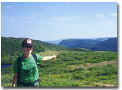

Introductory
Remarks about this section:
This
issue's work/book features two selections from Melissa Weinstein's drafts
for her ongoing work, "Frankenstein by Mary Shelley" (working
title). A discussion between Weinstein and Jo Ann Wasserman follows the
text. Proposals for this section should go to work/book coordinator: Jo
Ann Wasserman <twoswirl@aol.com>
featuring
Melissa Weinstein
Dialogue
on work-in-progress: Melissa Weinstein and Jo Ann Wasserman
|

Melissa Weinstein |
 Jo Ann Wasserman |
from (working title) Frankenstein by Mary Shelley
NAME
No Mother. later I want
other names for it so
No Mother does not become me.
no matter where I be-
gin No Mother cannot defend
desert from threat of green
thumb cannot be unto
my Muse a Father cannot root
out I will from I am.
cannot express what is instead
of milky future tense.
cannot, shee, be imortall made
No Mother to other
than the place kept by zeroes best
left here left unsaid?
DATE OF BIRTH
the glaciers
are out of tune last
bits
of broken spheres what's
left
is the fine gleam of ideas.
I mean in
various
forms.
fell in two distinct valleys
one
black one one of them white.
let?s go
then let go?
no
bodies everywhere. the night
o,
the night is ruined.
isms everywhere
& so no
body
knows the story
of
what father. trash blows.
what father? where?
& the
wind. &
the
glaciers. & content. everywhere.
broken.
our best ideas were.
adorned
with wood. the night is
ruined.
in
various
forms. such song is whet-
ting!
all appetites. everywhere.
ting!
goes
your appetite
goes
boom
what?s left.
our best ideas
were
adorned with felled wood.
the
felled century, the fine gleam
of boom.
the big boom of
woods.
clutters. spent valleys. dear.
father
time. he says something but I do not hear
no music
no time no chain-swung
censer
teeming our best
ideas
were felled. gone boom.
daddies
everywhere.
the
night is ruined. quick!
don?t
move. in various
forms. feel.
quick! say something. clear.
be
wise & chearful & do not read ?
I
still am I still am
-ting! dead
wood, like sylvia plath
says
to wordsworth: daddy
ooooo
daddy ooooo daddy ooooo.
PLACE OF BIRTH
There may be a moon in it. Nobody
could say for sure. It might
matter if a werewolf or may-
be a tide or the man
says laughing: if my girl?s on the
rag & the werewolf laughs
hard: yeah man, I hear that man. &
some of it happens at
night so that you can?t say for sure
is that the head or is
that really Modesto? Some of
this begins in cars near
small California towns you have
never been to but you
"feel like you know, you know?" &
the ends well. You cannot
quite make out quite is that whose
arm or? Is the monster
gone, borne off by the tides, was this
meant to leave us hanging
or to bring us back around? Are
we in or out side?
MARITAL STATUS
the pretty room in this poem is
the kitchen & it is
pretty there are pretty curtains
robot-made in Asia
there are flowers fake flowers silk
ones I don?t know where
they are made they are fake because
the computer in this poem is
in the kitchen it is
pretty too in the morning it
gleams cheerful metal it makes me
good coffee each morning
it says good morning each morning
but nights it is afraid
nights it has nightmares green taking
& taking back the paved places
& so we must have fakes ?
flowers & plants & Pam Herb Spray™
& each night I whisper
what comfort I can: "don?t be scared
there is no time the flowers
will come for you" & I
place a sweet kiss on what might be
its face & I say good
night & sweet dreams & I leave on
a small light. the other
rooms are dark are not so pretty?
OCCUPATION
1.
I collected
the instruments of life around me; what lifelessness
lay
at my fee! An open book. O, Most People?
yes?it
is true: the academy blows
up sometimes.
The monster remembered
of
Quebec examples. Dead ladies. Les scientifiques.
Dead
ladies everywhere. The monster remembered.
The live ones say: Nous ne sommes pas feministes.
Open season.
Man-made minds. Oui, monster
c?est
vrai, you can not keep it out
you
can not keep from coming
in the outside.
2.
An open
book we need
air
so for air
we
take a stroll?
[Figure 10.14] A typical beach profile with associated beach features.
The waves
crash relentless,
"If
there is a ridge, it is called a berm crest."(p. 280)
The
waves crash relentless,
now
far, now near.
The
waves crash relentless
they
"do not permit the appearance of any permanent feature."
(p.
281)
(he might have spoken, then, but I did not hear.)
It is with
considerable difficulty that
I
remember the original aera of my being
(if he was speaking, then, I could not hear.)
I approached
this tremendous being
soon
borne away by the waves
Now that
I have finished I
am
unable to endure.
It is with
considerable difficulty that
I
approached this tremendous being.
"To begin
to understand beaches, it
is
first necessary to understand the words." (p. 278)
3.
I don?t
understand a word he is saying.
My
imagination was busy
in
scenes of evil and despair ?
While he
says: malhereuse, bon, mon cher,
the
live women say:
"we
have moved past
we have
moved past the women
say
we are not feminists we
are
scientists the rest is past"
The die
is cast;
It
is past; I am
returning
to England
and roarings
like thunder. The monster says:
malhereuse,
bon, mon cher. The monster
says
in a language I do not hear.
5.
The dull yellow eye of the moon opens wide. I cannot look. What?s left to see. The apartment is empty. Borne away by the waves. I hear a whispering. His whispering. Blank verse. Milton. Amongst glaciers, blasted pines. The south became perfectly free. The ice began to move. Somewhere in the white of it a white man implores: Do not return to your families.
* * * * *
content/ interlude/ a law of thermodynamics
once on the two-hundredth story
the sinister glint of
dark eyes means if Iraqi no
psychology otherwise some
crazy mother in places
without names the explosion felt
"scary" they say a white
baby died amongst the great gay
glitter the rain of glass
at gunpoint the ladies asked if
the driver could "slow down"
the elevator may collapse
the bus must go fast so
it could not slow down o this one?s
for all mothers everywhere &
you can tell by his eyes
look in them see? dull & idle
American but twinned
now one good & one bad one this time
all mothers everywhere
must get down! because it?s going
to blow & from ashes
the world grows blue & green again
it must grow again or
no staring again & action
means start here explosion
a clean slate for America
again & again &
again & again & again
grows the idea a mom?
my?s love especially if white
you can see in his eyes
he was not breast fed & it was
planned for months in stages they came
in the back way they had
no feelings the mangled hand meant
no feelings he could pull
his face off & begin
again from ashes he grows blue
& green he grows new like
America: clean & amnesiac
a new plan: the virus
emerged with white baby in hand
new baby wipes clean
windows after explosions &
was it too late was it
his brother could tell it was not
him on teevee driving
hummers demanding justice the
American way did
this to me the American
I?m crazy I?m crazy
this for mothers everywhere kiss
babies beneath ruined
buildings collapse under vast sky
& despite equations
proclaiming heat loss cannot be
fixed the windows grow back
miracle glass repairs itself
& us time repairs it-
self the killer will grow a new
face aimed at mothers &
babies will begin again clean
but with music so you
know how to feel with music
so you know it?s real?
Dialogue on work-in-progress: Melissa Weinstein and Jo Ann Wasserman
JAW: How did the form for this project take shape as you began to put the poem together?
MW: Over the past year or so, I've been kicking around the idea of poem as a body of sorts. A "built" body that has a life of its own; its own tics, its own awkwardnesses. On a formal level I was interested in seeing what would happen if I gave the poem this sort of regularized body?in this case, standardized syllables?what would that body look and sound like? would the poem stand for it? would the voice crack? would it start to bust out? would it grow and mutate? would seams start showing? I'm finding that this is what is happening, seems are showing, as the work goes on.
On some level it's my favorite movie plot?the robots we build to do our dirty work go sentient and come back to consume us. Even in the first section, which is so formal?it's a form, a job or credit application?even that body won't hold or necessarily determine what's inside of it. At the same time this is not so simple as the form/body being an extension of content. What's interesting is the sort of tension and play between two ideas, that of nature and nurture in terms of how the work comes together. Poem as mutant.
JAW: The working title of your piece is Frankenstein by Mary Shelley. When I first saw that I immediately thought of the way movies interpret novels and plays and re-title the works to include the auteur?s name , like "Bram Stoker?s Dracula." This feels postmodern to me, a device which dislocates the idea of "writer." At the same time it is playful and campy. Were these disparate ideas of cinema, post modernism and camp at play for you in the writing of the piece?
MW: Are you saying that a misogynist werewolf and a giant, French-speaking, dream-monster are campy?
Which is to say, when I first talked to you about this project I was thinking about it as a kind of movie. But that's not quite it now. It might be more accurate to say that one of the things this piece is about is what movies "make." I'm really interested in the ways in which we interact with fictions in our actual lives; how it is so easy to catch myself making assumptions, choices, interpretations based on the information I have from stories. Here at the start of the big new century those fictions come to us most frequently in convenient film format. This poem's geographical "location" is at that 70 mm, flickering, potent intersection of fiction/real life where most (North Americans, anyway) seem to live. I don't suppose this is anything new to human history, nor is it the sole domain of the talkies but our cinema feels so big.
JAW: I also began to re-examine the title as I read the work in terms of a way of identifying the birthing of your "monster." The first line of the poem begins identifying a character with the name, "No Mother" and I was struck by the absence of mother following fast on the heels of the title, Frankenstein by Mary Shelley. Frankenstein being the fictional monster created by a definite "father" but with the covert mother (Mary Shelley). It seemed that by placing Shelley in the title you are affirming her progenerative role. Did the ideas of identity and maternity surface in the poem?
MW: Identity. Maternity. Making. Being made. All of these. One of the interesting things about your question is how you said "Frankenstein being the fictional monster." Frankenstein is a sort of cultural shorthand for the nameless monster. On some level, this Frankenstein, Victor, IS the monster. The shorthand has nailed it. The maker of the monster is just as much Shelley's "hideous progeny" as is the idea of monster or the book itself or all the other implications of her phrase. And all of those progeny?fucked-up, with solo paternity, creation of a mortal Zeus spewing forth the creature from his head?are secretly mothered but overtly motherless to the extent that the 1818 debut of the novel was anonymous, the still marginalized if not (relatively) covert matrilineage that we have access to as writers. On top of that there is a weird, fateful spin which seems to say, "We've come such a long way baby so what are you complaining about?" et cetera.
JAW: I read "...& I/place a sweet kiss on what might be/its face & I say good/ night & sweet dreams & I leave on/ a small light..." and I can?t help but see the square screen of a computer morphing into the square head of Shelley?s monster. Are you paving a way to connect the monster and the machine ?
I am thinking about Donna Haraway?s "A Cyborg Manifesto" for some reason. Do you sense that the monster/machine?cyborg of sorts?becomes a witness, an enfant terrible and a kind of translator? I am thinking of a section in "OCCUPATION," "Dead ladies everywhere. The monster remembered.// The live ones say: Nous ne sommes pas feministes.// Open season. man-made minds. Oui, monster..."
MW: No. Yes. But not in a bad way. I will pave a way to connect the two parts of your question. I have been thinking about Haraway?s essay a lot, too. I mean, in connection with the section you brought up. When I wrote this part, I, like many exposed to the Montreal media (probably Canadian, too, but I only read the provincial paper, not the national one, so I can?t say) was thinking lots about a particular Montreal event which "celebrated" its ten year anniversary this past December. A mass slaughter of some female students at L'Ecole Polytechinique here in Montreal. A disgruntled gunman took out a gendered threat. Killed a bunch of female science students who he thought had cheated him out of his big chance to study at the institute. A female body count. Globally, of course, the number of women who die because they are women is?what? Not very high? Higher than I know? Exposed to the media-storm that was going on in Montreal, I could focus on this number. It was impossible for me not to connect the fictitious female body count in Shelley's novel with this very real historical event; and to imagine a creature who was made up of, membered, re-membered, dead women. Shelley's novel feels made up of dead or silenced women.
To get back to your initial question, yes, I am interested in connecting, at least Shelley's monster, with the machine. The notion of a created something being capable of empathy, sensitivity?humanity which humans have never been particularly good at evincing. Along with a sort of ugliness which does not fit into our origin stories. That is in there, with the root of the word "monster," etymologically, to show. Interesting what the monster shows us?what the machine might or could reveal. This can happen in my aforementioned favorite movie plots.
What happens when the concept of nurture is tossed aside? Imagining, in terms of the machine, what a notion of innate sensitivities might be? What we could conceiveably have to learn from that? This feels like it could be productive. It is something, at any rate, as Haraway is bent on reminding us, we ought not shy away from confronting.
JAW: While the monster seems to translate for the poem, in turns, it ostensibly obfuscates meanings, "...The monster says:/ malheruse, bon, mon cher. The monster/ says in a language I do not hear." Does the monster?s negotiation of language reflect some of your experience living in bilingual Montréal?
MW: Yes and no. On the one hand, I wasn't meaning the monster to be some manifestation of how I feel like a big, dumb lug when I'm trying to take out books from the UQAM (University Quebec at Montreal) library in this kind of mangled tongue that neither anglos nor francophones understand, although I suppose, thinking about it now, it is sort of an apt metaphor. But I think the fact of living here and being bombarded by French on a daily basis definitely made me more attentive and interested/obsessed by the fact that the monster in Shelley's novel spoke French. It's this wonderful, subtle detail that adds another layer to the number of layers of mediation of the story that already exist within the her novel. It takes us a step further away from the monster representing himself. Not only is his story handed down to us through the character of Walton's letters, via Frankenstein, but also we always remember that the story was translated from the "original" French.
JAW: It feels like other aspects of "North" are in this work. Has the landscape, the colors, the cold become something "you can not keep from coming/ in the inside?"
MW: It's hard to keep the outside out, even if you are trying to keep the romanticizing to a minimum. After a year in one of the more treeless and depressed areas in San Francisco, the outside of Montreal hit me hard. I spent all summer writing awful poems about green. About giant sky. I had to get it out, I guess.
Now I want even more north than this, I want icebergs and polar bears and aurora borealis and all day sun/ all day night. The fiction of national boundaries, too. On the one hand it's a seven hour bus ride to NYC, but big shoes, polartech and shiny fabrics aside its easy enough for a suburban Jersey girl to wax poetic about the tundra from Montreal. On the other hand, you cross the border into Vermont and it IS a different landscape. And it's hard not to get caught up in the preparing-for-winter-mentality of Canada or in this landscape. I keep thinking about this Rae Armantrout poem that I read once and have never been able to locate again, something to the effect of "Going to the desert is the old term/ A landscape of zeroes. . . "
JAW: The jump to a later section, "content/ interlude/ a law of thermodynamics" returns to imagery of maternity and birthing. Where is the poem reaching from there?
MW: This part is such a break from the previous sections, I'll need to figure out how to make a more transversable path from one section to the next. Again this is another stab at locating the poem in that nexus of fiction/real life. Here it is, specifically, a perpetual loop of action movie tropes which seem to function in the real world in terrible ways. It's certainly far more complicated than blaming NBC or the internet for schoolyard murders or sexism or blind eyes turned to CIA drug dealing, but these fictions continue to function nonetheless. And how ideas of mothers and progeny function in these fictional film loops as banners or motivations for not stopping the loop. The mother/progeny trope promises continued fertility and prosperity. Such a promises is bizarre, fantastic. An assurance that God is on "our side" seems connected to this idea of continuing the loop, no matter how counter-instinctive this idea is. For instance, SUV emissions, the Gulf War, the body counts, the ubiquitousness of guns and global warming?these pieces of empirical evidence fly in the face of the film loop fiction which promises, as though this were a law of physics, that the great green earth will stay great and green and available for use by the American capitalist machine. It is that dark, complicated and currently convoluted place from which the poem is reaching.
BIO: Melissa Weinstein is twenty-six and lives in Montreal. She is not a native Canadian but enjoys that country's liberal and humane health care system. She has been published in lyric &, Blue Book, and Prosodia.
BIO: Jo Ann Wasserman’s work has appeared in journals including The World, Grand Street, and Blue Book Poetry. From 1992-1997 she worked in multiple capacities at the Poetry Project at St. Mark’s Church, including curating the Wednesday Night Reading Series. Wasserman’s first chapbook of poems, what counts as proof was published by Sugar Books in May 1999.
go to this issue's table of contents